2026-W48 · 2026.11.25 KST 수집
Skill Leaderboard 공개 카탈로그의 저장소 중 최근 7일 스타 증가량 순위입니다.
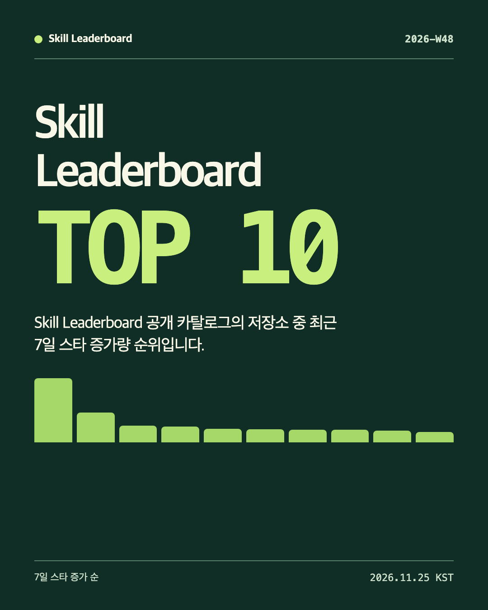
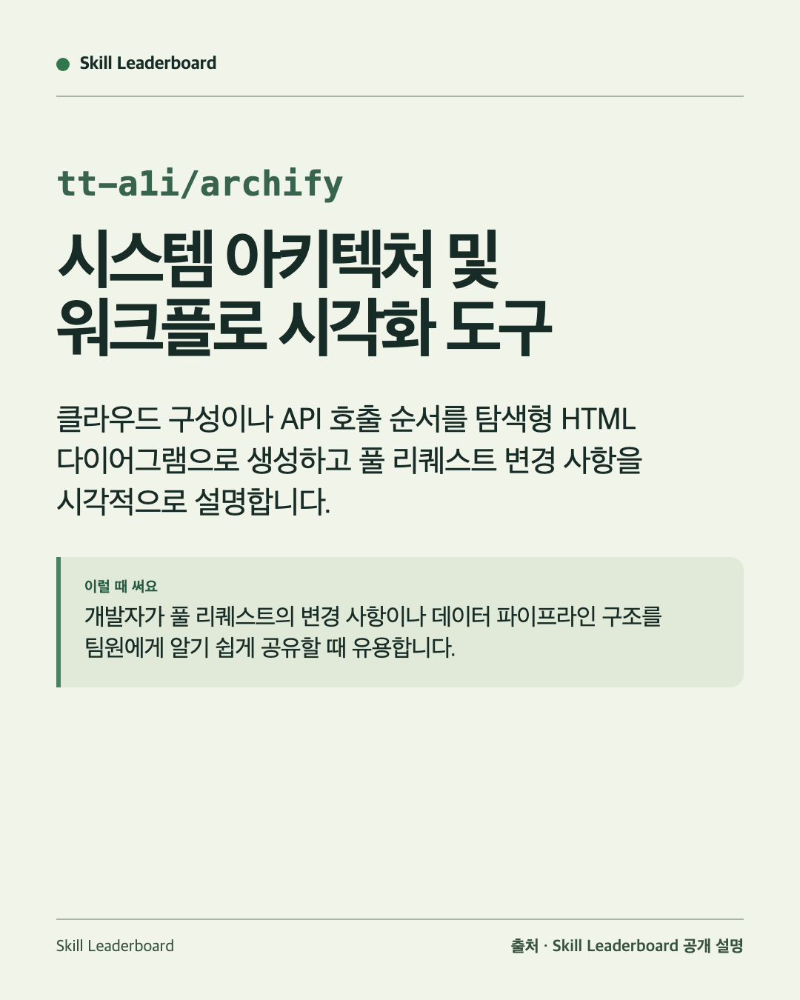
7일 스타 증가 26,888
클라우드 구성이나 API 호출 순서를 탐색형 HTML 다이어그램으로 생성하고 풀 리퀘스트 변경 사항을 시각적으로 설명합니다.
개발자가 풀 리퀘스트의 변경 사항이나 데이터 파이프라인 구조를 팀원에게 알기 쉽게 공유할 때 유용합니다.
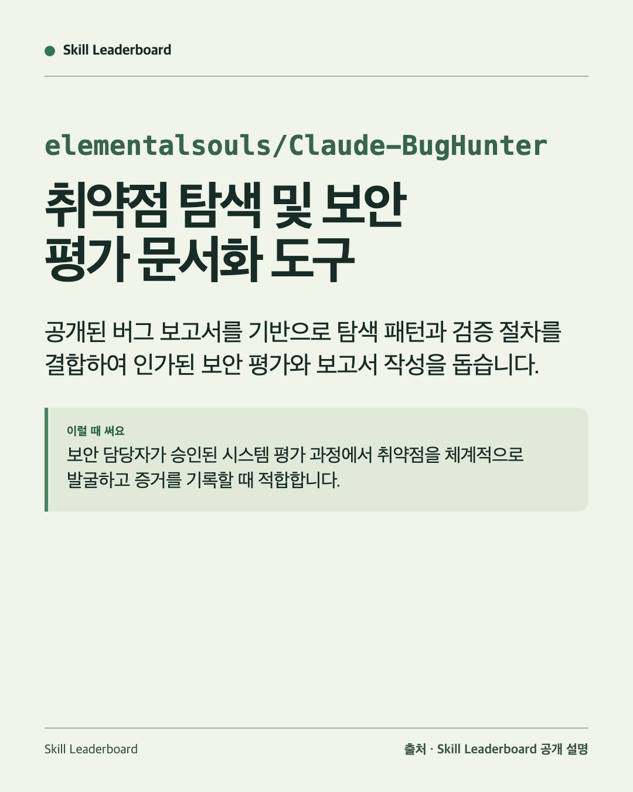
7일 스타 증가 12,499
공개된 버그 보고서를 기반으로 탐색 패턴과 검증 절차를 결합하여 인가된 보안 평가와 보고서 작성을 돕습니다.
보안 담당자가 승인된 시스템 평가 과정에서 취약점을 체계적으로 발굴하고 증거를 기록할 때 적합합니다.
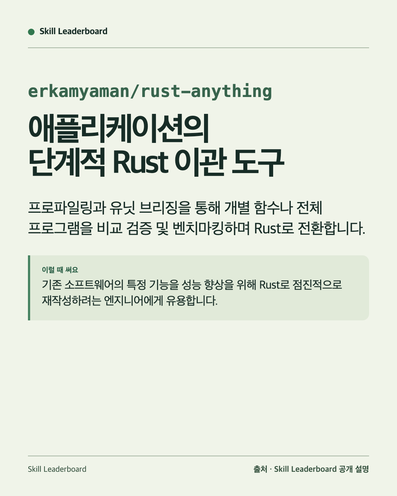
7일 스타 증가 7,069
프로파일링과 유닛 브리징을 통해 개별 함수나 전체 프로그램을 비교 검증 및 벤치마킹하며 Rust로 전환합니다.
기존 소프트웨어의 특정 기능을 성능 향상을 위해 Rust로 점진적으로 재작성하려는 엔지니어에게 유용합니다.
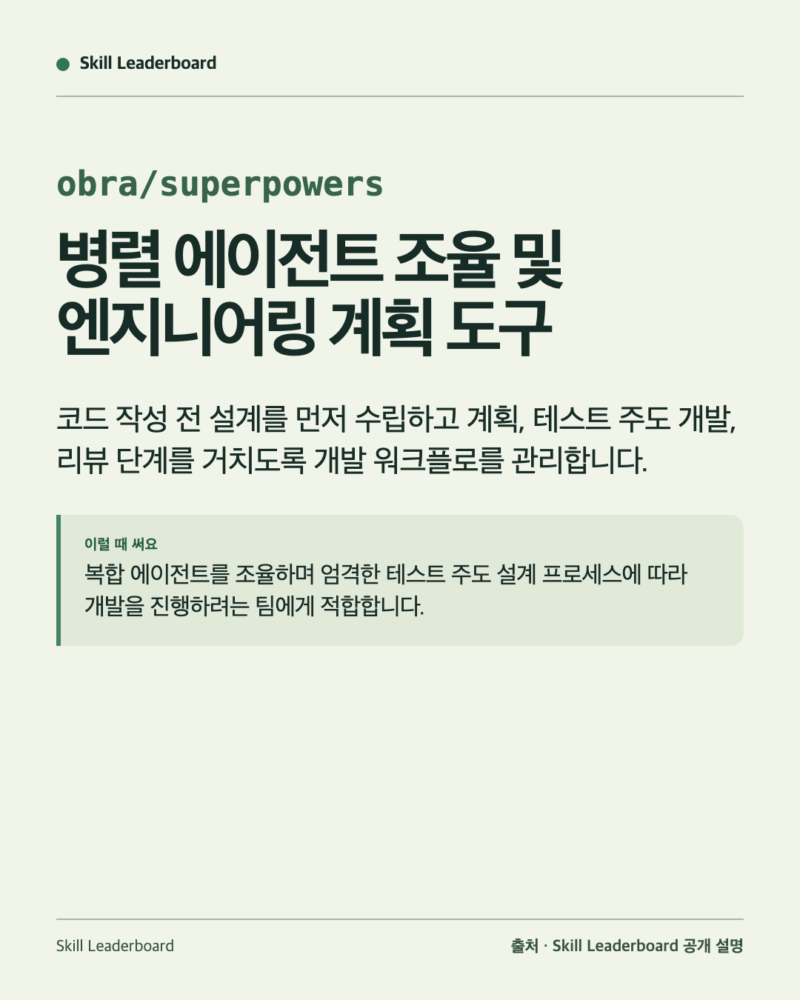
7일 스타 증가 6,595
코드 작성 전 설계를 먼저 수립하고 계획, 테스트 주도 개발, 리뷰 단계를 거치도록 개발 워크플로를 관리합니다.
복합 에이전트를 조율하며 엄격한 테스트 주도 설계 프로세스에 따라 개발을 진행하려는 팀에게 적합합니다.
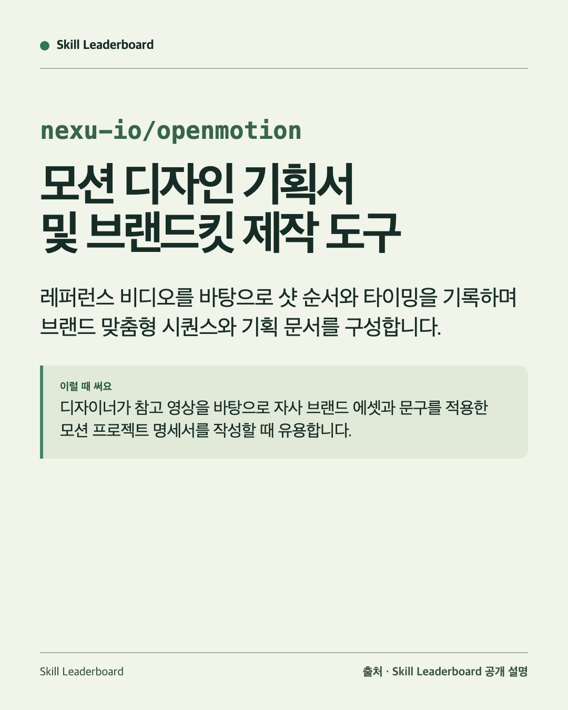
7일 스타 증가 5,595
레퍼런스 비디오를 바탕으로 샷 순서와 타이밍을 기록하며 브랜드 맞춤형 시퀀스와 기획 문서를 구성합니다.
디자이너가 참고 영상을 바탕으로 자사 브랜드 에셋과 문구를 적용한 모션 프로젝트 명세서를 작성할 때 유용합니다.
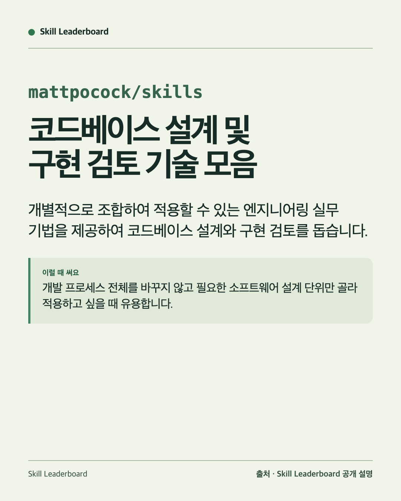
7일 스타 증가 5,435
개별적으로 조합하여 적용할 수 있는 엔지니어링 실무 기법을 제공하여 코드베이스 설계와 구현 검토를 돕습니다.
개발 프로세스 전체를 바꾸지 않고 필요한 소프트웨어 설계 단위만 골라 적용하고 싶을 때 유용합니다.
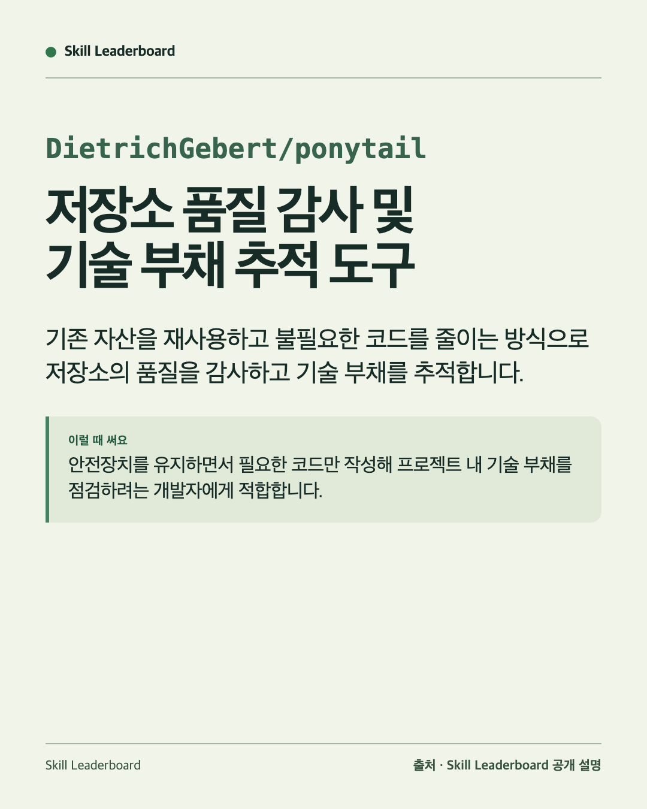
7일 스타 증가 5,246
기존 자산을 재사용하고 불필요한 코드를 줄이는 방식으로 저장소의 품질을 감사하고 기술 부채를 추적합니다.
안전장치를 유지하면서 필요한 코드만 작성해 프로젝트 내 기술 부채를 점검하려는 개발자에게 적합합니다.
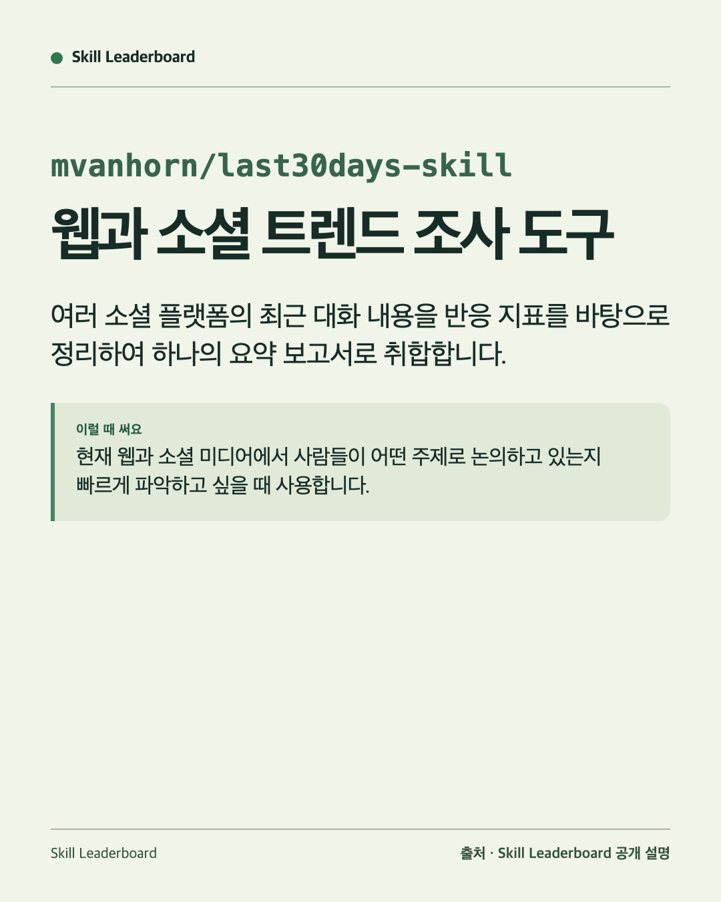
7일 스타 증가 5,233
여러 소셜 플랫폼의 최근 대화 내용을 반응 지표를 바탕으로 정리하여 하나의 요약 보고서로 취합합니다.
현재 웹과 소셜 미디어에서 사람들이 어떤 주제로 논의하고 있는지 빠르게 파악하고 싶을 때 사용합니다.
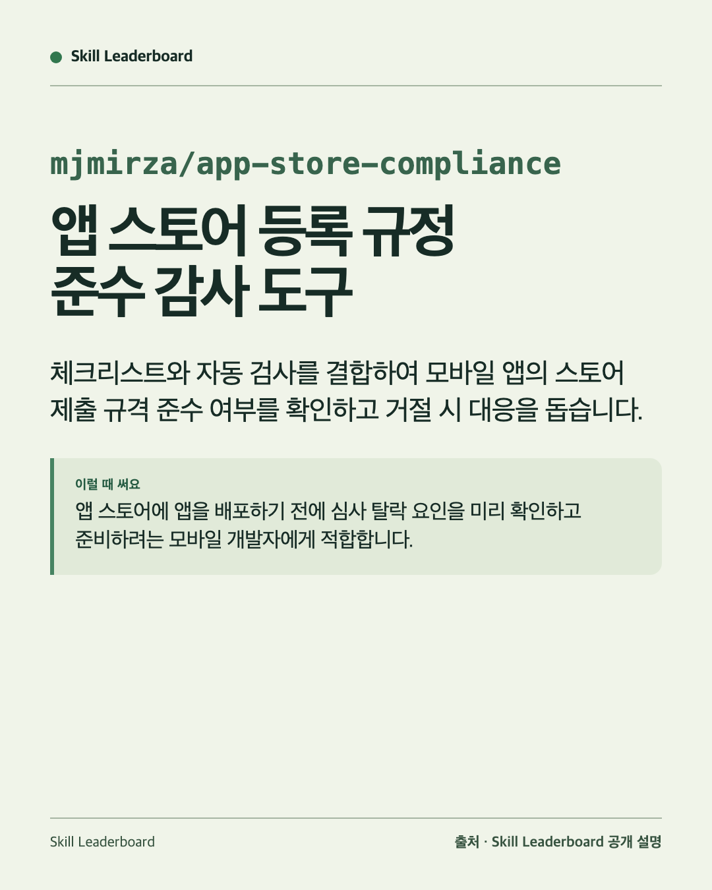
7일 스타 증가 4,950
체크리스트와 자동 검사를 결합하여 모바일 앱의 스토어 제출 규격 준수 여부를 확인하고 거절 시 대응을 돕습니다.
앱 스토어에 앱을 배포하기 전에 심사 탈락 요인을 미리 확인하고 준비하려는 모바일 개발자에게 적합합니다.
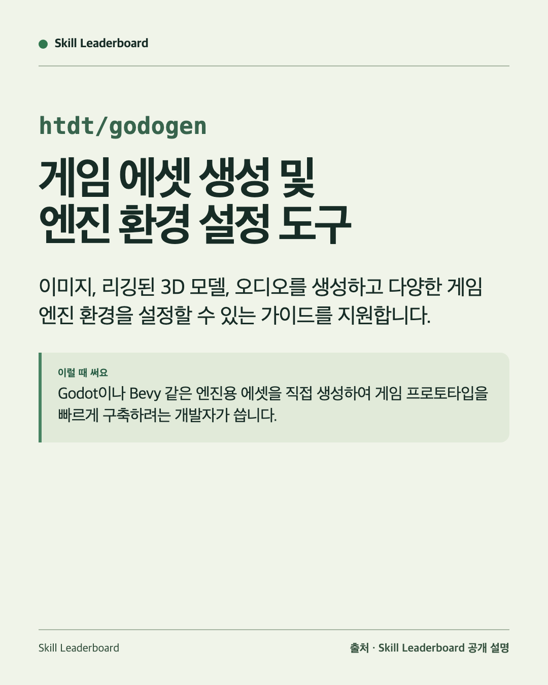
7일 스타 증가 4,398
이미지, 리깅된 3D 모델, 오디오를 생성하고 다양한 게임 엔진 환경을 설정할 수 있는 가이드를 지원합니다.
Godot이나 Bevy 같은 엔진용 에셋을 직접 생성하여 게임 프로토타입을 빠르게 구축하려는 개발자가 씁니다.